7thguarden
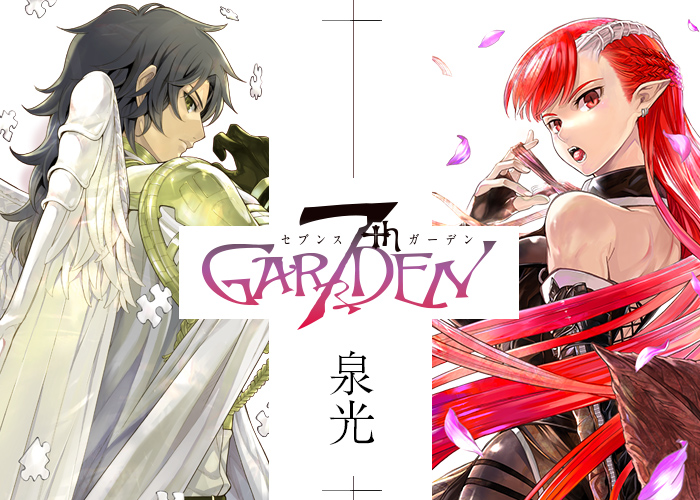
Mangá: 7thGarden
Gênero: Ação, Fantasia, Shounen, Drama, Mistério, Demônios
Volumes: 5 volumes
Autor: Izumi Mitsu
Data de publicação: 4 de agosto de 2014 - Em andamento
Ocultar
|
Mostrar
Como um jardineiro servido em uma mansão rural, Awyn desejava nada mais do que dias de paz,
juntamente com a filha de seu senhor, Marie. Um dia, ele acidentalmente acorda um demônio que dorme em uma montanha próxima.
O que ela queria era tê-lo como seu servo antes da derrubada do céu e transformar este mundo em seu jardim. Awyn claro recusou a oferta.
No entanto, não muito tempo depois, a cidade onde Awyn mora foi subitamente invadida por cavaleiros templários que supostamente eram para proteger o país.
Awyn foi então apresentado a duas escolhas: Perecer juntamente com o jardim e seus entes queridos,
ou tornar-se servo do demônio e ter este mundo que vai perecer em vez dele perecer...
Witch Hunter
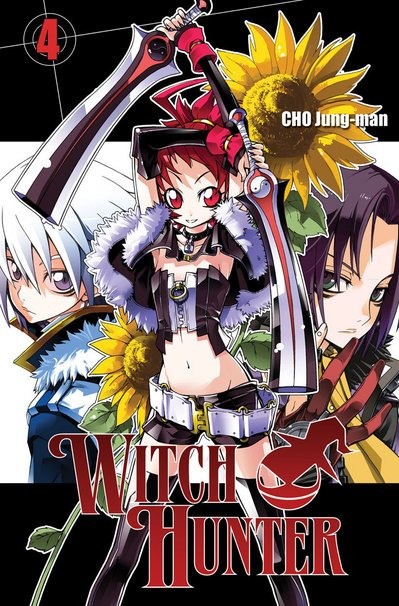
Mangá: Witch Hunter
Gênero: Ação, Comédia, Fantasia, Shounen, Sobrenatural
Volumes: 19
Autor: Jung-man Cho
Data de publicação: 15 de fevereiro de 2006 – em andamento
Ocultar
|
Mostrar
Bruxas repentinamente declaram guerra contra os humanos, causando com que dois terços do mundo desmoronassem.
Elas invocam monstros chamados Supportes e devastam as residências humanas, mas por quê?
Sobreviventes se juntam com pessoas cujas tem o poder de combater as bruxas e são chamados de Witch Hunter!
Tasha Godspell é um dos mais fortes apelidado "O Atirador" junto com seu Supporter com a aparência de "Jack Cabeça de Abóbora".
Ele luta contra as bruxas, mas não pode realmente odiá-las?
Aka Akatoretachi no Monogatari
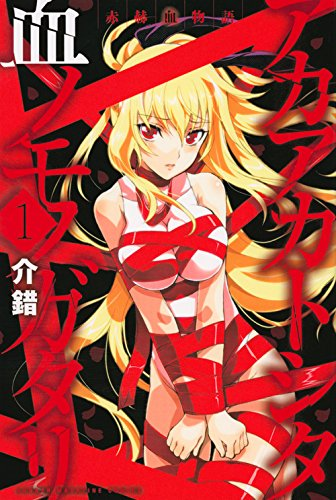
Mangá: Aka Akatoretachi no Monogatari
Gênero: Ação, Aventura, Ecchi, Fantasia, Romance, Shounen
Volumes: 6
Autor: Kaishaku
Data de publicação: 9 de setembro de 2014 - Em andamento
Ocultar
|
Mostrar
Itsuki e Hayato, dois amigos que cresceram em uma aldeia situada nas montanhas partiram para caçar um lobo que tem atacado o gado da aldeia.
Itsuki está prestes a mata-lo quando um animal gigantesco aparece do nada, pegando o lobo em suas mandíbulas e sugando a vida dele.
A besta que olhou para Itsuki foi um gigantesco cervo vampiro... Será que os dois amigos serão capaz de voltar para a aldeia vivos?!
Black Cat
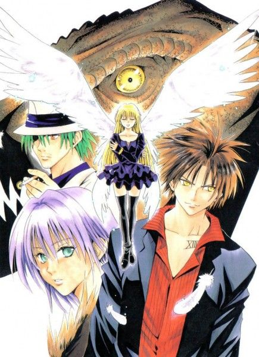
Mangá: Black Cat
Gênero: Ação, aventura
Volumes: 20
Autor: Kentaro Yabuki
Data de publicação: 2000 – 2004
Ocultar
|
Mostrar
O mundo de “Black Cat” é controlado por uma organização secreta chamada Chronos.
Sob o comando desta misteriosa organização estão os "Chrono Numbers", um grupo de poderosos assassinos que matam de acordo com a vontade da organização.
Train Heartnet é um dos mais poderosos assassinos, o "Número XIII", ou simplesmente “Black Cat” devido a suas rápidas reações a ataques e também por seu título ser "Número 13".
Ele é um mestre nas armas e também um assassino frio e impiedoso, até conhecer Saya, uma caçadora de recompensas que lhe mostra o valor da vida humana e
que alguém deve viver para corrigir os erros dos outros, em vez de simplesmente morrer por isso.
Black Haze
Mangá: Black Haze
Gênero: Ação , Comédia , Drama , Fantasia , Vida escolar , Tragédia, Drama, Sobrenatural.
Volumes: 22
Autor: 2012 – em andamento
Data de publicação:
Ocultar
|
Mostrar
Depois de uma missão ter dado errado, Rood é enviado para a famosa escola de magia, Helios.
Ali ele deverá proteger o filho de uma pessoa muito importante, está indo muito mal na escola.
Cavalier of the Abyss
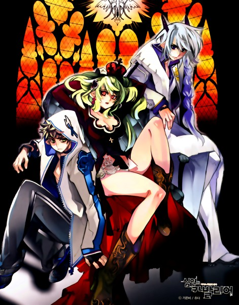
Mangá: Cavalier of the Abyss
Gênero: Ação, Aventura, Fantasia, Sobrenatural, Drama, Tragédia
Volumes: 22
Autor: Juder, Deo JYU
Data de publicação: 2008 – em andamento
Ocultar
|
Mostrar
Um jovem sedento por vingança planeja matar o rei tirano, que governa o Chaos.
No caminho ele se depara com a princesa que casará com o filho do rei, e decide usá-la como isca…
Dawn of the Arcana
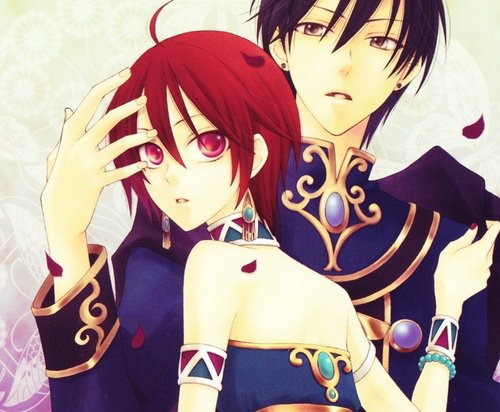
Mangá: Dawn of the Arcana
Gênero: Fantasia , romance
Volumes: 13
Autor: Toma Rei
Data de publicação: 24 de janeiro de 2003 - 24 de junho de 2013
Ocultar
|
Mostrar
Em uma ilha, existem dois países, Senan e Belquat, os quais sempre estiveram em guerra constante.
Para selar a paz de vez entre ambos, cria-se um acordo de matrimônio entre eles.
Nakaba, princesa da Senan, é levada ao país inimigo para se casar com o príncipe de Belquat, Ceasar.
No entanto, nem tudo será tão fácil como parece!
Girls of the Wild's
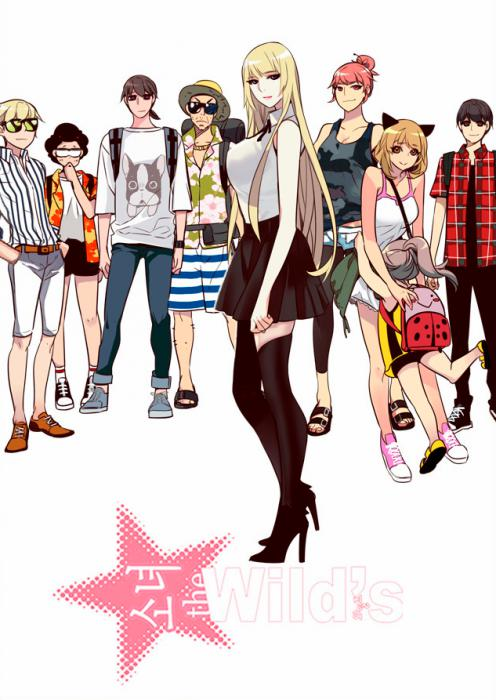
Mangá: Girls of the Wild's
Gênero: Ação, Artes Marciais, Comédia, Drama, Harem, Romance, Shounen, Vida Escolar
Volumes: 2
Autor: Kim Hye-Jin
Data de publicação:
Ocultar
|
Mostrar
O Colégio Wilds, tem uma história de 42 anos como especialista em combate, todas as meninas do colégio privado destina-se exclusivamente para a elite.
A Wilds-League é o evento mais popular do país, o único lugar no mundo onde as meninas têm lutas brutais. Este ano foi transformado em uma escola mista.
O único estudante homem, Song-Jae Gu, foi concedido uma bolsa de estudos de 3 anos, independentemente de suas notas.
Sendo uma pessoa que precisa trabalhar ou cuidar de seus dois irmãos mais novos, ele acabou aceitando a proposta.
No entanto, a bolsa foi concedida com uma única condição, de não sair.
Mas depois de conhecer a rainha sangrenta do último torneio e lhe derrubar café, vê-la tomando banho… seus dias podem estar contados.
Golem Hearts
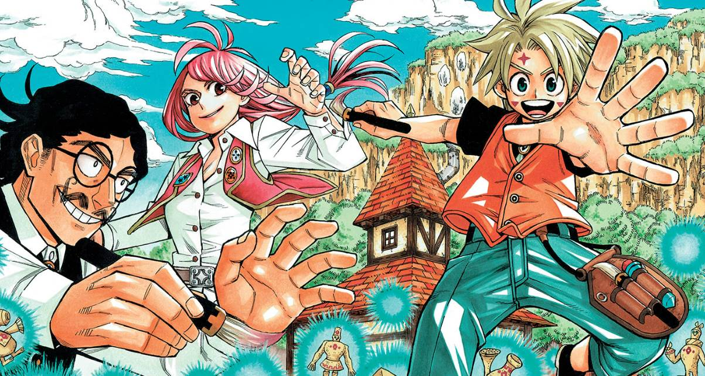
Mangá: Golem Hearts
Gênero: Ação, Aventura, Fantasia, One-Shot, Shounen
Volumes: 1
Autor: Gen Osuka
Data de publicação: 2017 – em lançamento
Ocultar
|
Mostrar
Golems! Bonecos criados com magia que fazem tudo que seus mestres lhes mandam ajudando as pessoas nas tarefas do dia a dia.
Eles simplesmente ouvem e obedecem.... Com exceção de Noah. Um golem muito especial que possui sentimentos e uma enorme vontade de ajudar as pessoas.
Mas essa vontade termina mais atrapalhando do que ajudando e isso faz aqueles ao seu redor e o próprio Noah questionar sua existência...,
mas o amor de seu pai e a vontade dele ser reconhecido mudarão a vida de Noah para sempre!
Harapeko no Marie (Hungry Marie)
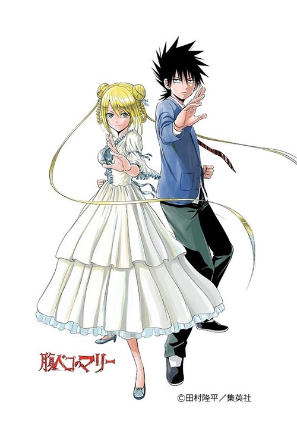
Mangá: Harapeko no Marie (Hungry Marie)
Gênero: Ação, Comédia, Romance, Shounen
Volumes: 4
Autor: Tamura Ryuuhei
Data de publicação: 2017 – em andamento
Ocultar
|
Mostrar
Bijogi Taiga é um garoto que vive num templo taoista e é apaixonado por Sagimiya Anna, sua vizinha que mora numa igreja.
Um dia, Taiga a encontra realizando um treinamento para um ritual de invocação muito estranho e na tentativa de se aproximar dela, aceita fazer parte do ritual...
Mal sabia ele que seria usado como SACRIFÍCIO para invocar... Maria Teresa Carlota de França? A antiga rainha francesa?!
Immortal Regis
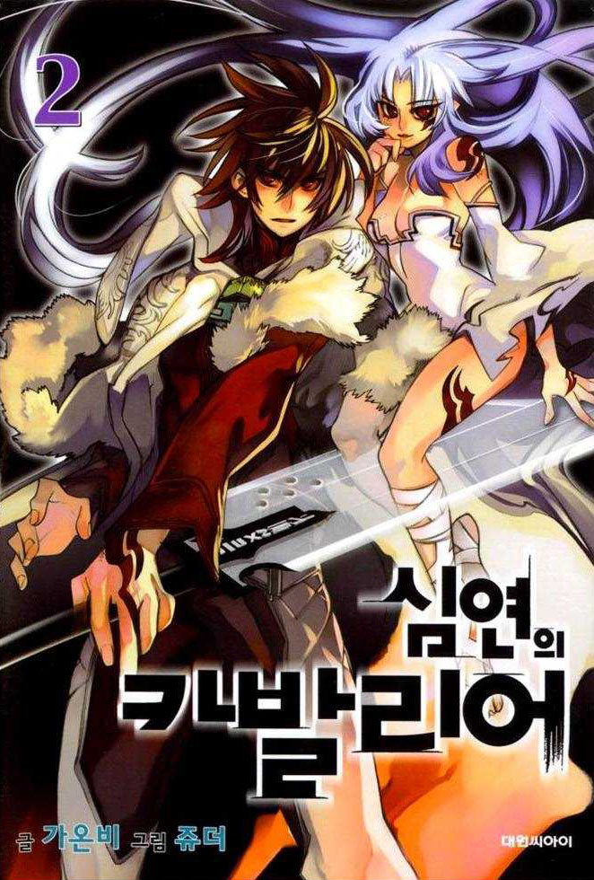
Mangá: Immortal Regis
Gênero: Ação, Aventura, Fantasia, Sobrenatural, Drama, Tragédia
Volumes: 6
Autor: Juder, Deo JYU
Data de publicação: 2006 - 2008
Ocultar
|
Mostrar
Jae Hyuk é um garoto normal e trabalhador, que cuida de seu irmão doente, ao levar seu irmão ao hospital, ouve um tumulto e resolve dar uma olhada.
O que ele não contava era que lá estivesse tendo uma luta de uma garota com um monstro e que no final dessa luta Jae Hyuk estaria morto.
Magico
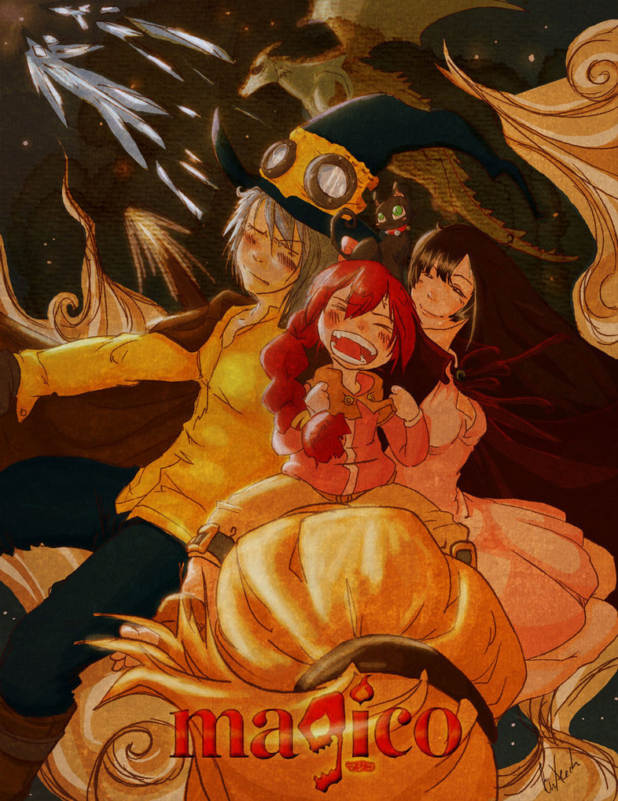
Mangá: Magico
Gênero: Aventura , Comédia , Romance , Fantasia
Volumes: 8
Autor: Naoki Iwamoto
Data de publicação: 28 de fevereiro de 2011 - 2 de julho de 2012
Ocultar
|
Mostrar
Emma, após completar 16 anos, foge do cativeiro onde estava presa todos esses anos e vai parar na capital Hawk Eye.
Logo que ela chega na cidade, todos os homens, incluindo o rei, se apaixonam perdidamente por ela.
Quando ela é forçada a se casar, é salva por um mago chamado Shion, um dos mais jovens e talentosos magos do país.
Emma é amaldiçoada por uma misteriosa magia chamada "Echidna" que aparece a cada 500 anos quando uma garota nasce e
faz com que seu coração seja tomado por uma magia negra que na mão da pessoa errada pode causar enorme caos no mundo.
Existe um processo para se livrar dessa maldição, o qual requer vários passos e o primeiro deles é o casamento de Shion e Emma...
Pandora Hearts
Mangá: Pandora Hearts
Gênero: Mistério, Ação, Comedia, Fantasia, Romance
Volumes: 24
Autor: Jun Mochizuki
Data de publicação: Junho de 2006 – Março de 2015
Ocultar
|
Mostrar
Oz Vessalius, herdeiro de uma das 4 casas nobres, acaba de completar 15 anos de idade.
Sua vida é rica e despreocupada, escurecida apenas pela ausência e o desprezo constante de seu pai.
Na cerimônia de maioridade (15 anos), porém, tudo muda.
Por alguma razão, é lançado na prisão conhecida como "Abyss" (Abismo), de onde é salvo por uma "Chain", conhecida como Alice, o "Coelho Sangrento",
Blood Stained Black Rabbit ou B-Rabbit. Porém, quando volta para o mundo real, Oz descobre que se passaram 10 anos desde a cerimônia.
A história segue então com Oz tentando desvendar os mistérios por trás de Alice, o Abyss e a estranha organização conhecida como Pandora,
além do motivo de ter sido jogado no Abyss.
Skip Beat
Mangá: Skip Beat
Gênero: Comédia romântica
Volumes: 42
Autor: Yoshiki Nakamura
Data de publicação: 12 de fevereiro de 2002 – em andamento
Ocultar
|
Mostrar
Skip Beat conta a história de Kyoko que foi usada e jogada fora pelo seu amor de infância Shotaru.
Ele a retirou de sua casa, na verdade convidou sabendo que ela nunca negaria, para ir com ele para a capital e assim ele poderia se tornar uma estrela musical.
Depois que ele conseguiu um pouco de fama ele largou de modo cruel nossa Kyoko sozinha nessa grande cidade.
Mas...O que não te mata te fortalece! O que você faria se descobrisse que a pessoa para a qual você dedicou toda a sua vida estava usando você?
A nossa protagonista sentiu na pele essa dor. Ela teve duas opções: aceitar ou ter sua vingança! Qual das opções você acha que ela escolheu?
Star Martial God Technique
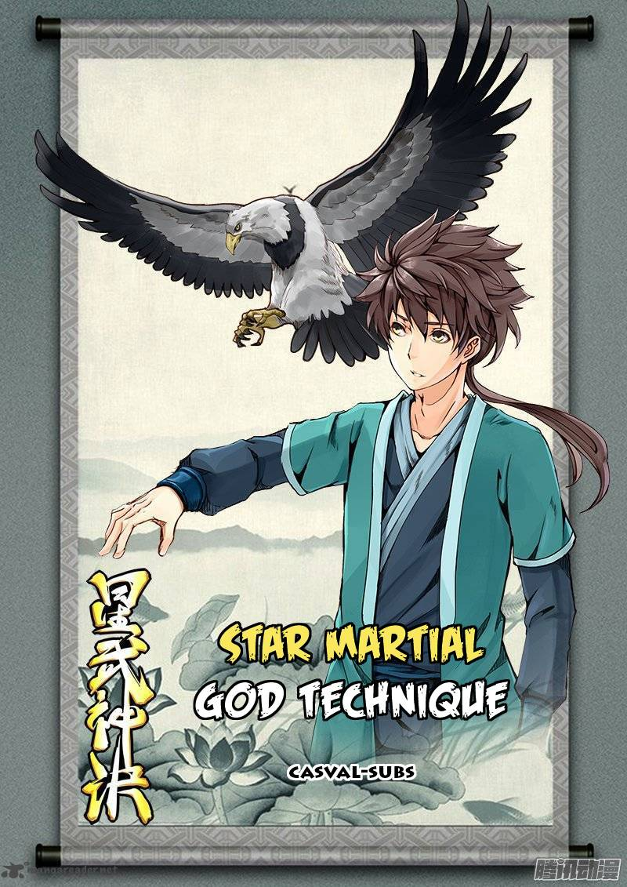
Mangá: Star Martial God Technique
Gênero: Ação, Artes Marciais, Aventura, Fantasia, Manhua, Romance, Sobrenatural
Volumes: 2
Autor: Mad Snail
Data de publicação: 31 de outrubro de 2016 – em andamento
Ocultar
|
Mostrar
No mundo existem doze caminhos para subir a torre de Deus, e contam as lendas que estes doze caminhos levam a lendária estrada da imortalidade.
No entanto, esses caminhos da Torre de Deus, são exageradamente longo, sem fim.
Nos tempos antigos haviam muitos tipos de artes marciais mas infelizmente o mundo passou por mudanças horríveis e restaram apenas três:
a arte marcial da Chama, do Dragão e da Estrela. As Gerações de especialistas dessas três artes marciais estão a procura da estrada da imortalidade.
Praticantes das Artes Marciais da Estrela, juntamente com a geração jovem, tentam durante toda sua vida encontrá-la para se tornar o Deus mais forte.
Tengen Toppa Gurren-Lagann
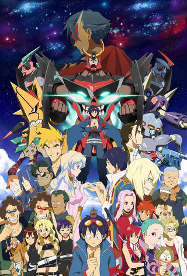
Mangá: Tengen Toppa Gurren-Lagann
Gênero: Ação, Aventura, Comedia, Espaço, Mecha, Shounen
Volumes: 10
Autor: Kazuki Nakashima
Data de publicação: 27 de Abril de 2007 – 27 de Maio de 2013
Ocultar
|
Mostrar
Em sua vila subterrânea fechada, Kamina e Simon se irritam com os limites impostos pelo ancião da aldeia.
No entanto, tudo isso vai mudar, quando Simon depara com um dispositivo fantástico - assim como a paz da aldeia é interrompida por uma invasão violenta.
The Breaker
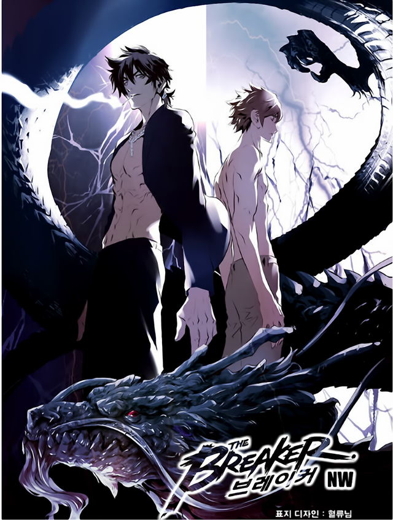
Mangá: The Breaker
Gênero: Artes marciais , drama
Volumes: 10
Autor: Jeon Geuk-jin
Data de publicação: 2007 - 2010
Ocultar
|
Mostrar
Um novo professor, Chun-woo não é um professor normal devido as suas astutas ambições.
Depois de inesperadamente testemunhar seu grande poder, Shin-woo implora para que ele o ensine para assim ele se tornar mais forte.
Chun-woo diz que só poderá ensinar Shin-woo após ele se jogar de uma ponte para provar a sua vontade.
Porém, Shin-woo não sabia que seu mestre era muito mais forte que ele sequer poderia imaginar.
Ele era um assassino que havia aperfeiçoado as nove artes marciais e que estava se escondendo após uma grande missão!
The Breaker: New Waves
Mangá: The Breaker: New Waves
Gênero: Ação, Artes Marciais, Comédia, Drama, Romance, Shounen
Volumes: 10
Autor: Jeon Geuk-jin
Data de publicação: 11 de outubro de 2011 – 15 de maio de 2015
Ocultar
|
Mostrar
Depois de seu mestre (Goomonryong) destruir seu Centro de Ki, Shioon deixa o mundo de Murim para uma vida normal
para a qual ele acredita que seu mestre está tentando retornar.
Mas para um garoto que tem o medalhão da Fenix do Clã Sunwoo e o conhecimento da Técnica do Céu Negro e da Terra,
o mundo de Murim retornará à ele...
The Groove Adventure RAVE
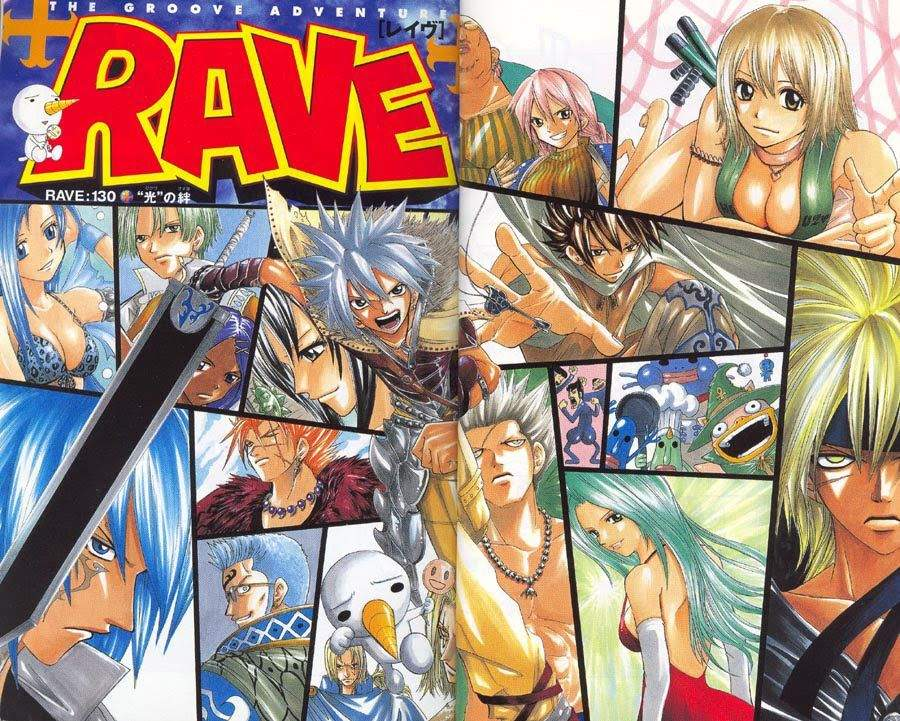
Mangá: The Groove Adventure RAVE
Gênero: Ação, Aventura, Comédia, Romance, Fantasia
Volumes: 35
Autor: Hiro Mashima
Data de publicação: Julho de 1999 – Julho de 2005
Ocultar
|
Mostrar
Cinqüenta anos atrás, uma grande guerra foi travada entre as forças da luz conhecida como Rave e da escuridão,
representada pela Darkbring (também chamada de Shadow Stone).
A batalha final finalmente iria ocorrer e Shiba o Mestre da Rave (o Rave Master) ao lado de seu amigo Plue,
preparavam-se para aniquilar as forças do mal para sempre.
Com a espada sagrada em punho e com seu amigo Plue liberando todo o poder da Rave, Shiba deu seu último e mais poderoso golpe, porém,
algo deu errado e a pedra do mal não foi destruída, ocorreu uma explosão mágica que ficou conhecida como Overdrive,
responsável pela destruição de um décimo do planeta e que liberou pequenos fragmentos de ambas as pedras por todos os cantos do mundo.
Tsubasa: Reservoir Chronicle
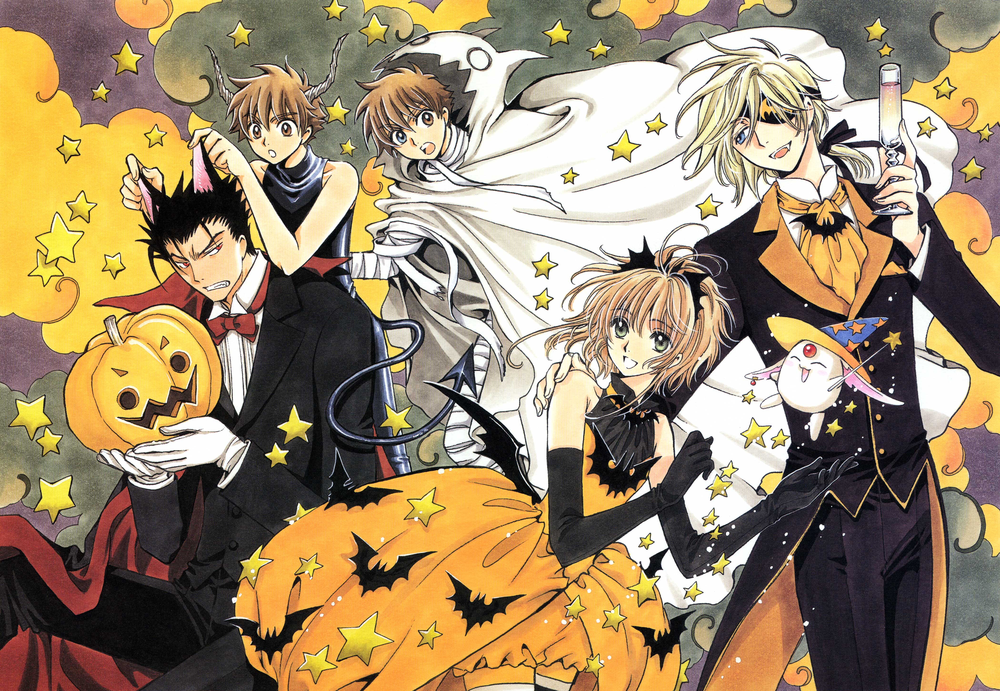
Mangá: Tsubasa: Reservoir Chronicle
Gênero: Shonen, Aventura, Romance, Fantasia
Volumes: 28
Autor: CLAMP
Data de publicação: Maio de 2003 – 7 de Outubro de 2009
Ocultar
|
Mostrar
Num reino chamado Clow, vivia a Princesa Sakura, que era apaixonada por um dos seus súbditos, o seu amigo de infância Syaoran.
Ele é arqueólogo, e assim como o seu pai, Fujitaka, trabalha numa escavação arqueológica nas ruínas do reino.
Um dia, a Princesa Sakura visita as escavações, com o propósito de declarar o seu amor a Syaoran.
Porém, ela é atraída por um símbolo no chão, com o qual havia sonhado anteriormente, e ao tocá-lo, fica inconsciente e começam a surgir asas nas suas costas.
Essas asas são dispersadas, e as penas, que representavam as suas memórias, são espalhadas por várias dimensões.
Sem elas, a Princesa se torna um "recipiente vazio", e corre risco de perder a vida.
Para salvá-la, o sumo-sacerdote do reino, Yukito, envia-a junto com Syaoran, à Bruxa das Dimensões, Yuuko